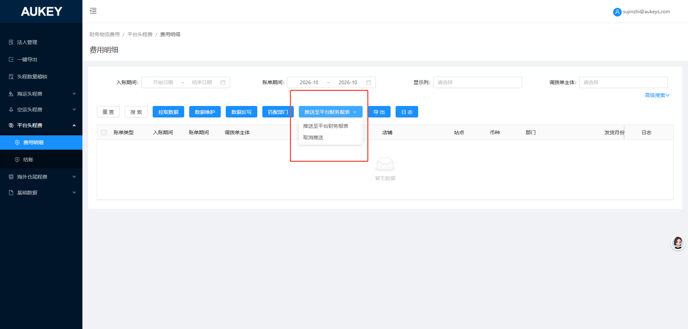

1.【推送至平台财务报表】：1.1点击按钮打开【推送范围】弹窗，其中【入账期间】：日期选择框精确到月默认展示上一自然月，必录；【海运承运商】：下拉多选无默认值；选项包括“CGFW-MSK（Wayfair）”“WMTFW-MSK（WalMart）”；
1.2点击确认后:
1.2.1在【平台财务报表/wayfair/下载详情】/【平台财务报表/walmart/下载详情】【生成时间】为所选入账期间次月第一天的数据是否已结账，若已结账则推送失败给出相应提示；
1.2.2校验所选范围数据是否存在对应【法人主体+入账期间】在【法人管理】非对应金蝶法人名称的当前期间或已关账的数据，存在则推送失败并给出相应提示；
1.2.3校验所选范围数据在【平台财务报表/wayfair/头程计提数据】【平台财务报表/walmart/头程计提数据】对应期间是否存在【是否汇总】为是的数据，若存在则推送失败并给出相应提示；
1.2.4校验【入账期间+店铺+站点】是否在【平台财务报表/账号管理/其他平台】/【平台财务报表/账号管理/walmart】匹到对应walmart/wayfair平台【期间+店铺+站点】同时【状态】=‘正常使用’的【店铺】；若未匹到则对推送 失败并给出相应提示；
1.3将所选数据推送至【平台财务报表/wyfair/头程计提数据】【平台财务报表/walmart/头程计提数据】中（先删除所选对应期间+【数据来源】=‘财务物流费用-平台头程费’的数据再推送），将字段一 一对应推送（调拨单主体对应平台财务报表法人主体，入账期间对应期间），无对应字段则赋空值；【是否汇总】赋值‘否’，【数据来源】赋值‘财务物流费用-平台头程费’；同时费用明细当前页面所选范围数据【是否推送】更新为‘是’；
——补充：【平台财务报表/wyfair/头程计提数据】列表是否汇总左侧和搜索框均新增【数据来源】，搜索框下拉多选无默认值选项包括‘手工导入、财务物流费用-平台头程费’；导入后数据来源赋值‘手工导入’；
2.【取消推送】：2.1点击按钮打开【取消推送范围】弹窗，其中【入账期间】：日期选择框精确到月默认展示上一自然月，必录；【海运承运商】：下拉多选无默认值；选项包括‘CGFW-MSK（Wayfair）’“WMTFW-MSK（WalMart）”；
2.2点击确认后：
2.2.1在【平台财务报表/wayfair/下载详情】/【平台财务报表/walmart/下载详情】【生成时间】为所选入账期间次月第一天的数据是否已结账，若已结账则取消推送失败给出相应提示；
2.2.2校验所选范围数据是否存在对应【法人主体+入账期间】在【法人管理】非对应金蝶法人名称的当前期间或已关账的数据，存在则取消推送失败并给出相应提示；
2.2.3校验所选范围数据在【平台财务报表/wayfair/头程计提数据】【平台财务报表/walmart/头程计提数据】对应期间是否存在【是否汇总】为是的数据，若存在则取消推送失败并给出相应提示；
2.3将【平台财务报表/wyfair/头程计提数据】【平台财务报表/walmart/头程计提数据】中期间为所选入账期间且【数据来源】=‘财务物流费用-平台头程费’的数据逻辑删除；同时费用明细当前页面所选范围数据【是否推送】更新为‘否’；
